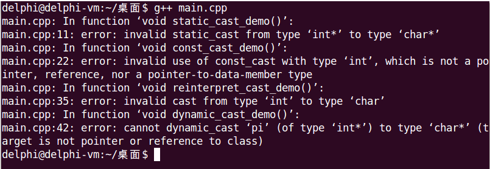

在C语言中，强制类型转换的方式为(Type)Expression，另外还有一种现在已经不用的旧式写法Type(Expression)，这两种方式是等价的。
但是，C语言的强制类型转换方式存在一些问题：
然而，强制类型转换在实际工程中几乎是不可避免的，为此C++将强制类型转换分为4种不同的类型，以提供更加安全可靠的转换。
| 强制类型转换 | 说 明 |
|---|---|
| static_cast | 用于基本类型之间、有继承关系的类对象之间、类指针之间的转换 不能用于基本类型指针之间的转换 |
| const_cast | 用于去除变量的只读属性 强制转换的目标类型必须是指针或引用 |
| reinterpret_cast | 用于指针类型之间、整数和指针类型之间的转换 |
| dynamic_cast | 用于有继承关系的类指针之间、有交叉关系的类指针之间的转换 具有类型检查的功能 需要虚函数的支持 |
C++提供的4种强制类型转换以关键字的方式出现，使用语法为：xxx_cast<Target Type>(Expression)。
#include <stdio.h>
void static_cast_demo()
{
int i = 0x12345;
char c = 'c';
int *pi = &i;
char *pc = &c;
c = static_cast<char>(i);
pc = static_cast<char *>(pi); // Error，static_cast不能用于基本类型指针间的转换
}
void const_cast_demo()
{
const int &j = 1;
int &k = const_cast<int &>(j);
const int x = 2;
int &y = const_cast<int &>(x);
int z = const_cast<int>(x); // Error，const_cast的目标类型必须是指针或引用
}
void reinterpret_cast_demo()
{
int i = 0;
char c = 'c';
int *pi = &i;
char *pc = &c;
pc = reinterpret_cast<char *>(pi);
pi = reinterpret_cast<int *>(pc);
pi = reinterpret_cast<int *>(i);
c = reinterpret_cast<char>(i); // Error，reinterpret_cast不能用于基本类型间的转换
}
void dynamic_cast_demo()
{
int i = 0;
int *pi = &i;
char *pc = dynamic_cast<char *>(pi); // Error，dynamic_cast只能用于有继承关系或交叉关系的类指针间的转换，且类中必须有虚函数
}
int main()
{
static_cast_demo();
const_cast_demo();
reinterpret_cast_demo();
dynamic_cast_demo();
return 0;
}
可以看出，使用新的强制类型转换